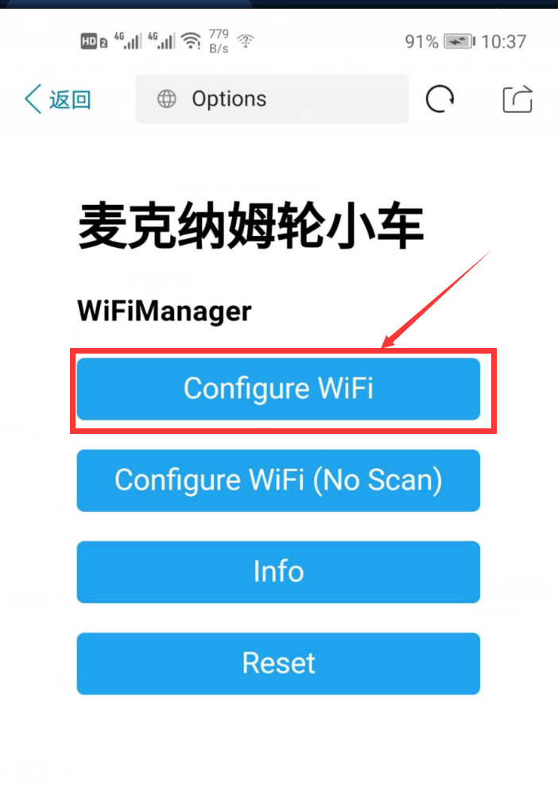

WEB网页配网
简介
大家常用的做法是将WIFI账号和密码在代码中写死，比如我们连的是宿舍的WIFI，但是到了教室又得改账号密码烧入连接教室的WIFI，到不同的地方就得重复此操作，还是比较麻烦的。
配网的意思就是让ESP8266能够方便的连接到WIFI网络。当ESP8266无法连接到上一次连接的WIFI的时候，ESP8266就会发出一个热点。 我们用手机连接这个热点就会弹出一个网页，然后输入附近WIFI的账号和密码就能够让ESP8266连接到这个网络。
给ESP8266网页配网使用的是 WiFiManager这个库。
搜索热点
给你的设备通电后，用手机搜索热点(一般热点名称都会和你使用的项目有关)，连接之后手机会提示你登录热点，点击会自动进入浏览器。
如果实在是不知道热点名称可以搜索代码中的autoConnect函数,可能会出现如下内容，括号中的就是ESP8266发出的配网热点名称
WiFiManager wifiManager;
wifiManager.autoConnect("麦克纳姆轮小车");
Serial.println("配网成功");
如果你是用电脑连接这个热点，没有弹出要登录的提示，请连接后到浏览器手动输入192.168.4.1进行配网。
注意：如果你已经进行过配网了，就不会再搜得到配网热点，打开串口监视器还会输出ESP8266的IP信息以及配网成功的字样
配网页面
点击第一个按钮Configure WIFI会跳转到第二个页面。 
选择你家里的wifi后，输入完密码点击save按钮。
然后等待esp8266重启后就可以了，重启完毕后如果ESP8266已经连接了你配置的WIFI就无法搜得到配网热点，这是正常现象。
清除配网
如果你想让ESP8266连接别的热点，有下列办法。
- 关闭ESP8266连接的WIFI，如果你给ESP8266连接的WIFI是路由器发出的，你只需要关闭路由器，然后重启ESP8266配网热点就会出来。这时候你配置其他的热点就可以了。
-
去一个无法搜索的到ESP8266现在连接的WIFI的地方，这时候配网热点也会出现。比如你配置的宿舍的WIFI,到了无法搜索到宿舍WIFI的地方，ESP8266的配网热点就会出现。
-
使用代码清除配网，代码如下：
#include <WiFiManager.h>
void setup()
{
Serial.begin(115200);
WiFiManager wifiManager;
wifiManager.resetSettings();
}
void loop()
{
}
上传完清除配网的代码后，再上传回你自己的业务代码就行了。
注意事项
- 配网的时候不要配置需要登入的热点，列如校园网，CMCC等。
- ESP8266只能配置2.4G的WIFI
- 只有当设备无法连接你配置的WIFI时，配网热点才会出现。